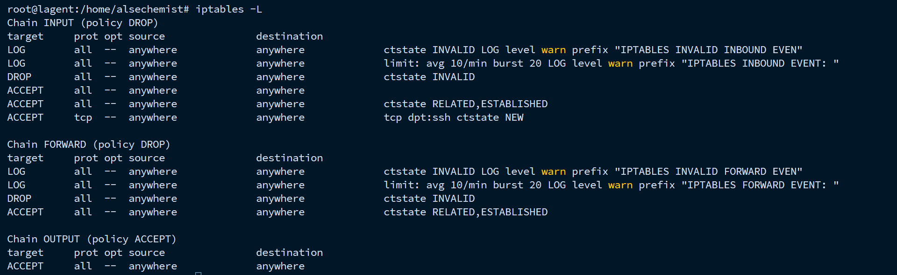
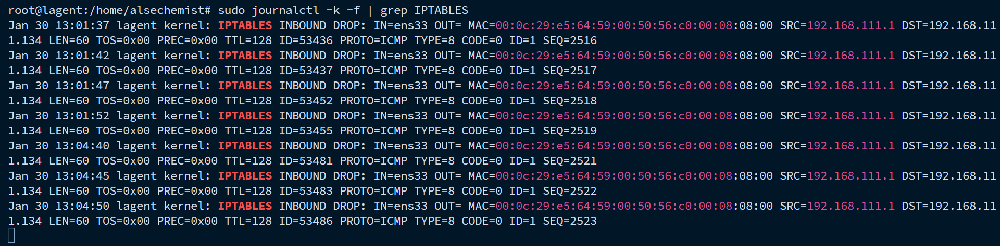
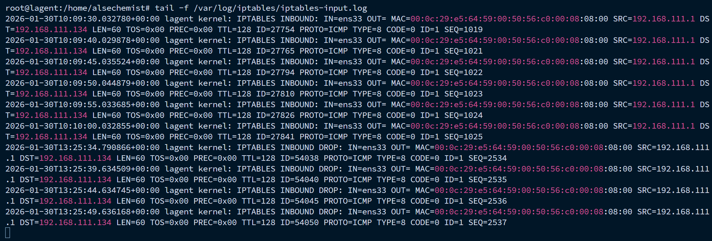

IPTABLES - A Comprehensive Firewall Management Guide
IPTables is a firewall utility that allows configuring Linux kernel firewall. It provides filtering, NAT, and packet mangling functions. IPTables rules can be created to filter traffic and secure cloud infrastructure components like virtual machines, containers, load balancers etc.
Below we are going too see some essential IPTables rules to secure an environment step by step,
Allow all loopback (lo0) traffic
Allow established and related incoming connections
Allow established and related forwarding traffic
Allow incoming SSH
Allow incoming HTTP and HTTPS
Drop invalid packets
Log every packets
Drop all other incoming traffic
Save IPTables rules
Make IPTables rules persistent across reboots
Setup log rotation for IPTables logs
Note
This guide assumes you have root or sudo access to the Linux system where you want to configure IPTables. Please ensure you understand the implications of modifying firewall rules, as incorrect configurations can lead to loss of connectivity.
Allowing Loopback Traffic
The loopback interface (lo0) is used for internal communication within the host. It’s essential to allow all traffic on this interface.
iptables -A INPUT -i lo -j ACCEPT
iptables -A OUTPUT -o lo -j ACCEPT
Allowing Incoming SSH Traffic
To allow incoming SSH connections, we need to accept traffic on port 22 (default SSH port).
iptables -A INPUT -p tcp --dport 22 -m conntrack --ctstate NEW -j ACCEPT
This rule allows new incoming TCP connections on port 22, enabling SSH access to the server.
Allowing Incoming HTTP and HTTPS Traffic
To allow incoming HTTP and HTTPS connections, we need to accept traffic on ports 80 and 443.
iptables -A INPUT -p tcp --dport 80 -m conntrack --ctstate NEW -j ACCEPT
iptables -A INPUT -p tcp --dport 443 -m conntrack --ctstate NEW -j ACCEPT
These rules allow new incoming TCP traffic on ports 80 and 443, enabling web server access.
Dropping Invalid Packets
To enhance security, we can drop invalid packets that do not conform to expected states.
iptables -I INPUT -m conntrack --ctstate INVALID -j DROP
iptables -I FORWARD -m conntrack --ctstate INVALID -j DROP
These rules drop any incoming or forwarding packets that are classified as INVALID by the connection tracking module.
Note
The above rules should be placed at the top of the INPUT and FORWARD chains to ensure they are evaluated first.
Logging Every Packet
To log every packet for monitoring and troubleshooting purposes, we can add the following rule:
iptables -I INPUT -m limit --limit 10/min --limit-burst 20 -j LOG --log-prefix "IPTABLES INBOUND EVENT: " --log-level 4
iptables -I FORWARD -m limit --limit 10/min --limit-burst 20 -j LOG --log-prefix "IPTABLES FORWARD EVENT: " --log-level 4
iptables -I INPUT -m conntrack --ctstate INVALID -j LOG --log-prefix "IPTABLES INVALID INBOUND EVENT: " --log-level 4
iptables -I FORWARD -m conntrack --ctstate INVALID -j LOG --log-prefix "IPTABLES INVALID FORWARD EVENT: " --log-level 4
These rules log every packet with a limit to prevent log flooding.
Setting Default Policies to Drop
To enhance security, we set the default policies for INPUT and FORWARD chains to DROP. This means any traffic not explicitly allowed by previous rules will be dropped.
iptables -P INPUT DROP
iptables -P FORWARD DROP
Note
Be cautious when setting default policies to DROP, as it may lead to loss of connectivity if not configured properly. Ensure that all necessary rules are in place before applying this step.
OUTPUT chain is typically set to ACCEPT to allow outgoing traffic from the server. It is optional to set it to DROP based on specific security requirements.
Saving IPTables Rules
To ensure that the IPTables rules persist across system reboots, we need to save them. The method to save IPTables rules may vary based on the Linux distribution.
For Debian/Ubuntu systems, at first we need to install the iptables-persistent package if it’s not already installed.
apt install iptables-persistent
Then, we can save the current IPTables rules using the following command:
iptables-save > /etc/iptables/rules.v4
This command saves the current IPv4 IPTables rules to the specified file and will auto-load them on system boot.
Checking IPTables Rules List
To verify the current IPTables rules, we can use the following command:
iptables -L
This command lists all the current IPTables rules in a human-readable format, allowing us to confirm that our rules have been applied correctly.
Refer to the image below for a high-level view,
{kind=link}
Tip
Always log first, then set the rules. This way, you can monitor what is being logged by the firewall. If you set the rules first, you may miss important log entries.
Observing IPTables Logs
By default, IPTables logs are sent to the kernel, where it can be viewed by executing the following command:
sudo journalctl -k -f | grep IPTABLES
This command will display real-time logs related to IPTables, allowing you to monitor every packet and other firewall activities.
Refer to the image below for a high-level view,
{kind=link}
A ping test was conducted from an external source to the server, which is not allowed by the IPTables rules we have set up. The logs above confirm that the ping requests were successfully dropped by the firewall, as indicated by the “IPTABLES INBOUND EVENT” log entries.
Storing the IPTables Logs Locally
By default, iptables are not saved locally as logs only keep appearing in the runtime kernel. To save the IPTables logs for future reference and analysis, we can configure rsyslog to capture and store these logs in a dedicated file.
Install rsyslog if it’s not already installed:
apt install rsyslog
Enable and start the rsyslog service:
systemctl enable --now rsyslog
Create a new configuration file for IPTables logging:
nano /etc/rsyslog.d/10-iptables.conf
Add the following line to the configuration file to direct IPTables logs to a specific file:
:msg, contains, "IPTABLES INBOUND EVENT: " -/var/log/iptables/iptables-input.log
& stop
:msg, contains, "IPTABLES FORWARD EVENT: " -/var/log/iptables/iptables-forward.log
& stop
:msg, contains, "IPTABLES INVALID INBOUND EVENT: " -/var/log/iptables/iptables-invalid-input.log
& stop
:msg, contains, "IPTABLES INVALID FORWARD EVENT: " -/var/log/iptables/iptables-invalid-forward.log
& stop
Save and close the file.
Create the log directory and set appropriate permissions:
mkdir -p /var/log/iptables
chown syslog:adm /var/log/iptables
chmod 750 /var/log/iptables
Create the log files and set appropriate permissions:
touch /var/log/iptables/iptables-input.log
touch /var/log/iptables/iptables-forward.log
touch /var/log/iptables/iptables-invalid-input.log
touch /var/log/iptables/iptables-invalid-forward.log
chown syslog:adm /var/log/iptables/iptables-input.log
chown syslog:adm /var/log/iptables/iptables-forward.log
chown syslog:adm /var/log/iptables/iptables-invalid-input.log
chown syslog:adm /var/log/iptables/iptables-invalid-forward.log
chmod 640 /var/log/iptables/iptables-input.log
chmod 640 /var/log/iptables/iptables-forward.log
chmod 640 /var/log/iptables/iptables-invalid-input.log
chmod 640 /var/log/iptables/iptables-invalid-forward.log
Restart the rsyslog service to apply the changes:
systemctl restart rsyslog
Now, IPTables logs will be stored in the specified log files for future reference and analysis.
You can monitor the IPTables logs in real-time by using the following command:
tail -f /var/log/iptables/iptables-input.log
tail -f /var/log/iptables/iptables-forward.log
tail -f /var/log/iptables/iptables-invalid-input.log
tail -f /var/log/iptables/iptables-invalid-forward.log
Refer to the image below for a high-level view,
{kind=link}
Setting Up Log Rotation for IPTables Logs
To prevent IPTables log files from growing indefinitely and consuming excessive disk space, we can set up log rotation using logrotate.
Create a new logrotate configuration file for IPTables logs:
nano /etc/logrotate.d/iptables
Add the following configuration to the file:
/var/log/iptables/*.log {
daily
rotate 180
missingok
notifempty
compress
delaycompress
dateext
dateformat -%Y-%m-%d
create 0640 syslog adm
sharedscripts
postrotate
systemctl restart rsyslog >/dev/null 2>&1 || true
endscript
}
This configuration will rotate the IPTables logs daily, keep 180 days of logs, compress old logs, and restart the rsyslog service after rotation.
Save and close the file.
Now, logrotate will manage the IPTables log files, ensuring they do not consume excessive disk space over time.
Testing the log rotation configuration
Check by dry running it:
logrotate -d /etc/logrotate.d/iptables
Force log rotation:
logrotate -vf /etc/logrotate.d/iptables
You should see output indicating that the log files have been rotated successfully.
Conclusion
In this guide, we have covered the essential IPTables rules to secure a Linux system effectively. By allowing necessary traffic, dropping unwanted packets, logging activities, and ensuring persistence across reboots, you can enhance the security of your server and protect it from potential threats by applying more iptables rules as per your requirements.